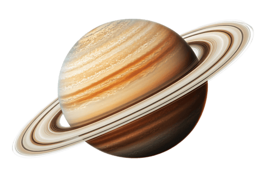

Hitória sobre Saturno
Saturno é o sexto planeta a partir do Sol e o segundo maior do Sistema Solar, ficando atrás apenas de Júpiter. É um gigante gasoso, composto principalmente por hidrogênio e hélio, com um núcleo rochoso e gelo no centro. Sua densidade é menor que a da água, o que o torna o único planeta do Sistema Solar que, em teoria, flutuaria em um oceano suficientemente grande
